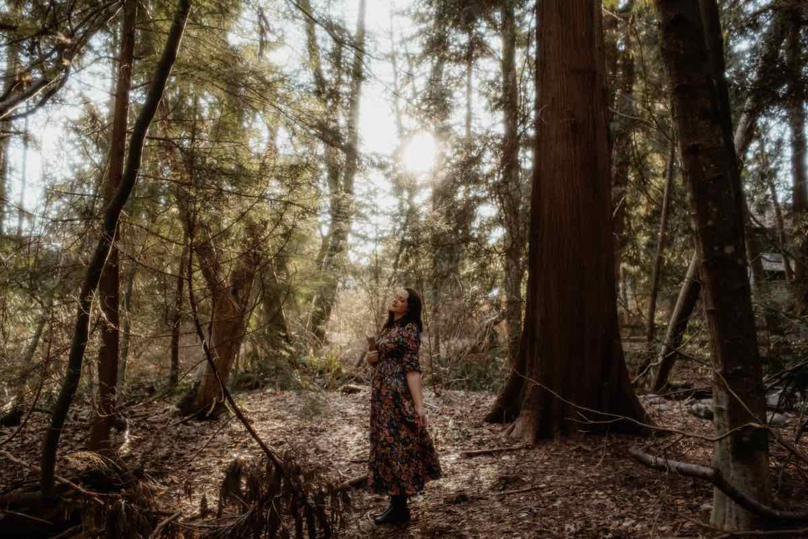

✦ Narrator · Voice Actor ✦
Shakira ShuteAudiobook Narrator
A full time narrator of over 180 titles, known for her versatility with characters and accents across literary, historical, romance, fantasy and children’s fiction.
Shakira Shute is a full time audiobook narrator of over 180 titles, specializing in literary, historical, romance, fantasy and children’s fiction, as well as historical and political non-fiction. She has worked with Penguin Random House, Simon & Schuster, Macmillan Audio, Hachette, Harper, and Tantor Audio, and has also narrated books in collaboration with Oxford University Press and MIT.
Shakira is a multi-award nominated narrator, known for her skills and versatility with characters and accents.
The Book of Voices
Audiobook Samples
A Reading of the Cards
What People Are Saying
I
“My book is a test for a voice artist: 7 POVs, all first person, half women, half men, very different personalities … she has nailed them all. I honestly can’t believe it. Listening to it back has been the best experience of my life.”
The Author
II
“My Favourite narrator by far. Shakira does such a great job of bringing my stories to life, she’s now top of my request list for every book I write.”
The Author
III
“I will look for anything that has Shakira Shute narrating. She was so much fun as all the characters.”
The Listener
IV
“Shute shifts expertly from the group's rampant sarcasm and sniping to their gut-wrenching sorrow over a past member's suicide.”
The Critic
V
“Shakira captured the essence of my characters so perfectly, I was blown away from the start. She went above and beyond to make sure that I was happy, and the end result was exceptional.”
The Author
VI
“Narrated with heart and vulnerability… Shute’s performance captures the romance, grief, and high-stakes glamour at the center of Lexi’s story.”
The Critic
VII

“This narrator is one of the best I’ve heard. All of her different voices and accents made me forget I was listening to one person. She is outstanding!”
The Listener
Tales Recently Told
Featured Releases
Clients
- Penguin Random House
- Simon & Schuster
- Macmillan Audio
- Hachette
- Harper
- Tantor Audio
- Dreamscape
- Podium Audio
Broadcast-ready
The Studio
Professional Home Studio
Available for live directed sessions and remote recording.
- Studio Bricks OnePlusVoice Over Edition sound booth
- Neumann TLM 103Microphone
- AudacityRecording and editing (DAW)
- Mac MiniComputer
- Cleanfeed / ZoomLive directed sessions and remote recording